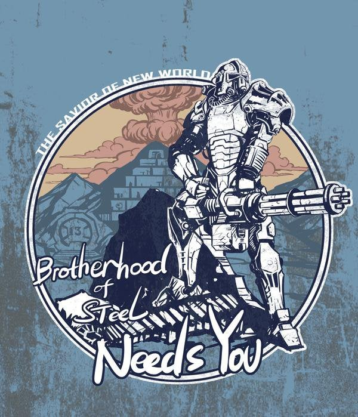

In 2076, the NBC division of West Tek achieved breakthrough results in the Pan-Immunity Virion Project. The United States Defense Department, fearing international espionage, moved a military team under the command of Colonel Robert Spindel and Captain Roger Maxson onto the site to secure and oversee the project, now dubbed the FEV (Forced Evolutionary Virus) project. On January 7, 2077, all FEV research was moved to the newly constructed Mariposa Military Base to commence testing of the virus on human subjects. The security team was transferred to the newly constructed base as well, to provide protection for the research going on within the facility. They were not informed of the nature of the research. Maxson's position solidified in 2283, when he negotiated a treaty with the Brotherhood Outcasts, bringing them back into the fold and reforming the entire organization, abandoning Lyons' Doctrine. Lyons' Brotherhood became a distant memory as Maxson restored the original mission of the Brotherhood of Steel. While some members found this distasteful and left, the overwhelming majority remained, proud to serve a refocused Brotherhood. Maxson became leader of the Brotherhood's Eastern branch, effectively leading to its rebirth.